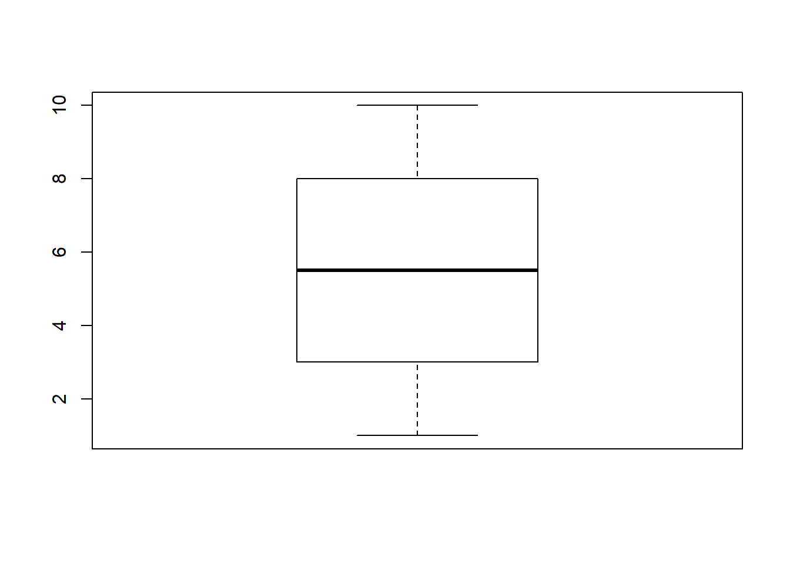
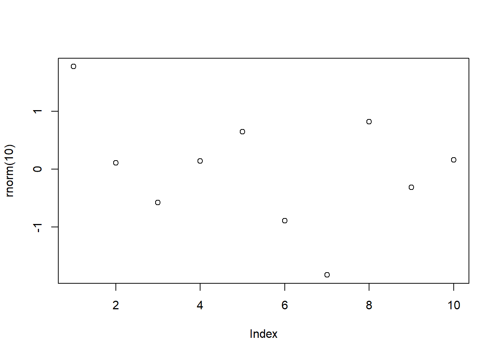
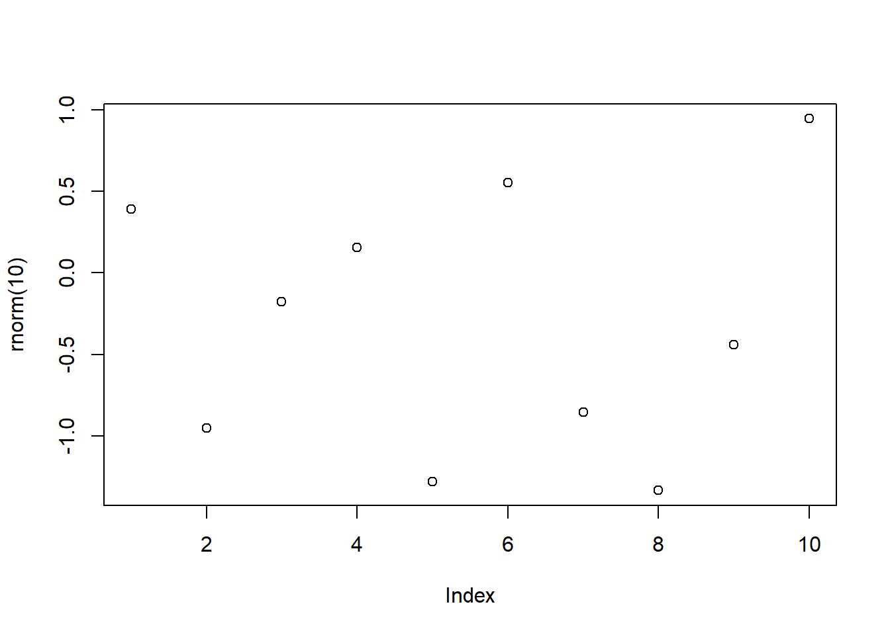
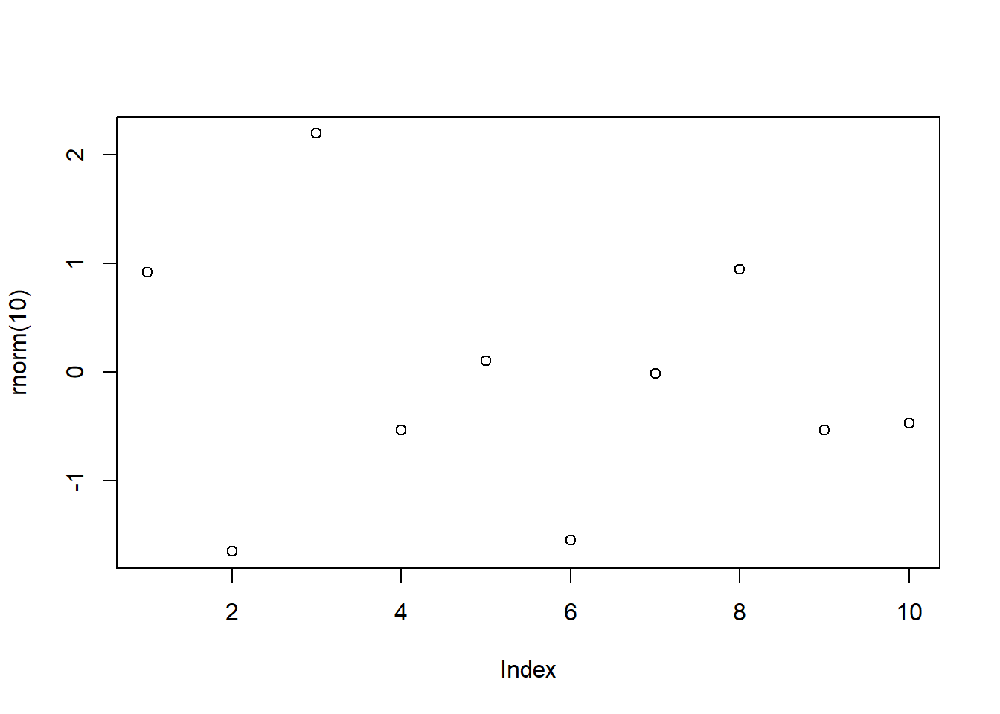

RMarkdown Cookbook
2020-10-23
- 使用 RMarkdown 的
child参数，进行文档拼接。 - 这样拼接以后的笔记方便复习。
- 相关问题提交到 Issue
1 Fenced code blocks
参考 https://github.com/carwin/markdown-styleguide
```
- This list item contains a fenced code block.
- Let's show how it might interact with a list.
```
.code-example {
property: value;
}
```
There is a newline above this paragraph because it is both the end of a
list and because it follows a fenced code block.
```2 display chunk
参考 https://github.com/yihui/knitr-examples/blob/master/065-rmd-chunk.Rmd
Sometimes we do not want to evaluate a chunk, and we just want to include a chunk literally, e.g. when writing tutorials. The R code chunks in these examples are still identified by knitr. If we do not want to evaluate the code at all, there is another approach, which is to break the chunk syntax by adding an empty string as inline R code.
也就是说，在```{r}后面增加''即可。
```{r eval=TRUE}
n = 10
rnorm(x)
```
Figure 2.1: 如果不缩进的话，目录会产生问题。
没有变成 chunk 是因为没有缩进。
it is indented by 4 spaces because we want to show it in a preformatted block in the HTML output
```{r eval=TRUE}
n = 10
rnorm(x)
```这就是 Zero Width Space 也是一种方法，一般不容易手动加入。
要注意缩进。

Figure 2.2: 否则 RStudio IDE 会错误识别。
或者存到文档里面，进行 read
参考 [rmd-template]，并且需要注意加上comment=""，方便复制。


5 HTML Tips
5.1 Skip a line
A first sentence
<br><br><br><br>
A seconde sentenceA first sentence
A seconde sentence
5.2 Center an image
<center>

</center>只需要略懂<>标记语言。
5.3 White space around img

fig.asp=5 还不懂。
5.5 figures in columns
```{r out.width=c('25%', '25%', '25%', '25%'), fig.show='hold'}
library(magrittr)
boxplot(1:10)
plot(rnorm(10))
plot(rnorm(10))
plot(rnorm(10))
```
5.6 Several columns
Since R Markdown use the bootstrap framework under the hood. It is possible to benefit its powerful grid system. Basically, you can consider that your row is divided in 12 subunits of same width. You can then choose to use only a few of this subunits.
Here, I use 3 subunits of size 4 (4x3=12). The last column is used for a plot. You can read more about the grid system here. I got this result showing the following code in my R Markdown document.
{r, message=FALSE, echo=FALSE} ggplot( mtcars, aes(x=mpg)) + geom_histogram(fill="skyblue", alpha=0.5) + theme_minimal()
<div class = "row">
<div class = "col-md-4">
<br><br>Since R Markdown use the [bootstrap framework](https://getbootstrap.com/docs/4.0/layout/grid/) under the hood. It is possible to benefit its powerful grid system. Basically, you can consider that your row is divided in 12 subunits of same width. You can then choose to use only a few of this subunits.
</div>
<div class = "col-md-4">
<br><br>Here, I use 3 subunits of size 4 (4x3=12). The last column is used for a plot. You can read more about the grid system [here](bootstrap grid system). I got this result showing the following code in my R Markdown document.
</div>
<div class = "col-md-4">
``{r, message=FALSE, echo=FALSE}
ggplot( mtcars, aes(x=mpg)) + geom_histogram(fill="skyblue", alpha=0.5) + theme_minimal()
``
</div>
</div>5.7 Hide code
output:
html_document:
code_folding: "hide"这算是给一个选择。
5.8 Internal link
6 公式加上编号
参考 https://github.com/nealxun/ForecastingPrinciplePractices/blob/master/11-advanced.Rmd
\begin{align}
\label{var1a}
y_{1,t} &= c_1+\phi _{11,1}y_{1,t-1}+\phi _{12,1}y_{2,t-1}+e_{1,t} (\#eq:var1a)\\
y_{2,t} &= c_2+\phi _{21,1}y_{1,t-1}+\phi _{22,1}y_{2,t-1}+e_{2,t} (\#eq:var1b)
\end{align}\[\begin{align} \label{var1a} y_{1,t} &= c_1+\phi _{11,1}y_{1,t-1}+\phi _{12,1}y_{2,t-1}+e_{1,t} \tag{6.1}\\ y_{2,t} &= c_2+\phi _{21,1}y_{1,t-1}+\phi _{22,1}y_{2,t-1}+e_{2,t} \tag{6.2} \end{align}\]
就是必须这样写
而是要多加上$$ 别加，然后下面可以引用公式\begin{align}和\end{align}
\@ref(eq:var1a) 和 \@ref(eq:var1b)7 让 output 保存到特定的文件夹
参考 https://bookdown.org/yihui/rmarkdown/rmarkdown-site.html
比如在 analysis 文件夹中产生两个文件夹
analysis/index.Rmd，这是空文件。index.Rmd先 knit 得到output/index.html。analysis/_site.yml，内容为output_dir: ../output
On branch master
Your branch is up to date with 'origin/master'.
Untracked files:
(use "git add <file>..." to include in what will be committed)
analysis/_site.yml
analysis/index.Rmd
analysis/test-output-dir.Rmd
output/test-output-dir.md
nothing added to commit but untracked files present (use "git add" to track)以 analysis/test-output-dir.Rmd 为例，当通过快捷键 Ctrl + Shift + K render 文件时，产出 output/test-output-dir.md 的位置在设定的路径output。
8 类似 nbdev 写函数功能
Actually, I find ‘dot’ is one of the engines which ‘knitr’ support.
library(magrittr)
#> Warning: 程辑包'magrittr'是用R版本3.6.1 来建造的
names(knitr::knit_engines$get()) %>%
sort()
#> [1] "asis" "asy" "awk" "bash" "block" "block2"
#> [7] "c" "cat" "coffee" "css" "dot" "fortran"
#> [13] "fortran95" "gawk" "go" "groovy" "haskell" "highlight"
#> [19] "js" "julia" "lein" "mysql" "node" "octave"
#> [25] "perl" "psql" "python" "Rcpp" "Rscript" "ruby"
#> [31] "sas" "sass" "scala" "scss" "sed" "sh"
#> [37] "sql" "stan" "stata" "tikz" "zsh"Created on 2020-02-02 by the reprex package (v0.3.0)
However, I don’t find any source to run dot just like python, Julia. I think there is another way to do it. Use the chunk to preview dot code and use another r chunk to display the dot output.
## [1] "```{cat, engine.opts=list(file = 'sample.dot')}"
## [2] "digraph course {"
## [3] "rankdir = LR"
## [4] "node [shape = box, style=filled]"
## [5] "layout = dot"
## [6] "compound =true"
## [7] "#color = crimson"
## [8] ""
## [9] "a -> b"
## [10] "c -> d"
## [11] "}"
## [12] "```"
## [13] ""
## [14] "```{r}"
## [15] "DiagrammeR::grViz(\"sample.dot\")"
## [16] "```"The temporal file "sample.dot" is optional, you can use a temp file by fs::path_temp.
Here, ‘cat’ is also one of the engines ‘knitr’ supports. Here are the notes to introduce it.
https://bookdown.org/yihui/rmarkdown-cookbook/eng-cat.html
以下是实现效果。
9 spin_child
knitr::spin_child("analysis.R")
10 pretty print
参考 https://stackoverflow.com/questions/24524594/pretty-print-sql-code-from-separate-file-with-knitr
## ```sql
## `r xfun::file_string('mycode.sql')`
## ```11 engine.path
cat("```{python, engine.path = 'D:\\install\\miniconda\\Scripts\\ipython3.exe'}
import sys
print(sys.version)
```")## ```{python, engine.path = 'D:\install\miniconda\Scripts\ipython3.exe'}
## import sys
## print(sys.version)
## ```直接找到 exe。
'D:\\install\\miniconda\\Scripts\\ipython3.exe' 注意要双逸出符号
12 direct use dot
I find the solution on a yihui’s post. See the example ‘dot.Rmd’ host on GitHub.
Here, the code is written in RMarkdown.
The output is here https://github.com/yihui/knitr-examples/blob/master/057-engine-dot.md
因此我回复了这个问题 https://community.rstudio.com/t/dot-in-rmarkdown/51311/4
13 R 代码模块引用
参考 http://stackoverflow.com/q/14802183/559676 源代码参考 https://github.com/yihui/knitr-examples/blob/master/083-ggplot2-reference.Rmd
Now we can use <<>> to reference it.
library(ggplot2)
qplot(carat, price, data=diamonds, color=cut)+
theme (legend.text = element_text(size = 12, angle=45))+
theme (legend.position = "bottom")
目前测试，只支持 ggplot2
14 Caption
14.1 caption 默认在下

Figure 14.1: 图片的 caption
Figure 14.2: 图片的 caption
Figure 14.3: 图片的 caption
14.2 caption 不重复
fig.show = "hold"
```{r, fig.cap='图片的 caption', fig.show = "hold"}
knitr::include_graphics(rep("../figure/bug-toc.png", 3))
```Figure 14.4: 图片的 caption
15 cross reference
参考 https://bookdown.org/yihui/bookdown/cross-references.html
[A plain text]
{r phases, echo=FALSE, message=FALSE, warning=FALSE,fig.cap='汇率制度的变动'}直接这样写，保证DiagrammeR等HTML的对象也可以存在 captions。
16 自定义 comment 的符号
```{r comment=''}
print(1:5)
```
```{r comment='##'}
print(1:5)
```[1] 1 2 3 4 5## [1] 1 2 3 4 5这样前面就没有##了。
17 写 @
\@LeiLei-Miao 这样 render 的时候，就不会识别为 bibtex
18 markdown 构建 table
| | mpg| cyl| disp| hp| drat| wt| qsec| vs| am| gear| carb|
|:-----------------|----:|---:|----:|---:|----:|-----:|-----:|--:|--:|----:|----:|
|Mazda RX4 | 21.0| 6| 160| 110| 3.90| 2.620| 16.46| 0| 1| 4| 4|
|Mazda RX4 Wag | 21.0| 6| 160| 110| 3.90| 2.875| 17.02| 0| 1| 4| 4|
|Datsun 710 | 22.8| 4| 108| 93| 3.85| 2.320| 18.61| 1| 1| 4| 1|
|Hornet 4 Drive | 21.4| 6| 258| 110| 3.08| 3.215| 19.44| 1| 0| 3| 1|
|Hornet Sportabout | 18.7| 8| 360| 175| 3.15| 3.440| 17.02| 0| 0| 3| 2|
|Valiant | 18.1| 6| 225| 105| 2.76| 3.460| 20.22| 1| 0| 3| 1|| mpg | cyl | disp | hp | drat | wt | qsec | vs | am | gear | carb | |
|---|---|---|---|---|---|---|---|---|---|---|---|
| Mazda RX4 | 21.0 | 6 | 160 | 110 | 3.90 | 2.620 | 16.46 | 0 | 1 | 4 | 4 |
| Mazda RX4 Wag | 21.0 | 6 | 160 | 110 | 3.90 | 2.875 | 17.02 | 0 | 1 | 4 | 4 |
| Datsun 710 | 22.8 | 4 | 108 | 93 | 3.85 | 2.320 | 18.61 | 1 | 1 | 4 | 1 |
| Hornet 4 Drive | 21.4 | 6 | 258 | 110 | 3.08 | 3.215 | 19.44 | 1 | 0 | 3 | 1 |
| Hornet Sportabout | 18.7 | 8 | 360 | 175 | 3.15 | 3.440 | 17.02 | 0 | 0 | 3 | 2 |
| Valiant | 18.1 | 6 | 225 | 105 | 2.76 | 3.460 | 20.22 | 1 | 0 | 3 | 1 |
19 data.frame to markdown table
例如表格
| mpg | cyl | disp | hp | drat | wt | qsec | vs | am | gear | carb | |
|---|---|---|---|---|---|---|---|---|---|---|---|
| Mazda RX4 | 21.0 | 6 | 160 | 110 | 3.90 | 2.620 | 16.46 | 0 | 1 | 4 | 4 |
| Mazda RX4 Wag | 21.0 | 6 | 160 | 110 | 3.90 | 2.875 | 17.02 | 0 | 1 | 4 | 4 |
| Datsun 710 | 22.8 | 4 | 108 | 93 | 3.85 | 2.320 | 18.61 | 1 | 1 | 4 | 1 |
| Hornet 4 Drive | 21.4 | 6 | 258 | 110 | 3.08 | 3.215 | 19.44 | 1 | 0 | 3 | 1 |
| Hornet Sportabout | 18.7 | 8 | 360 | 175 | 3.15 | 3.440 | 17.02 | 0 | 0 | 3 | 2 |
| Valiant | 18.1 | 6 | 225 | 105 | 2.76 | 3.460 | 20.22 | 1 | 0 | 3 | 1 |
这样的表格展示出来就是 markdown 了。
| | mpg| cyl| disp| hp| drat| wt| qsec| vs| am| gear| carb|
|:-----------------|----:|---:|----:|---:|----:|-----:|-----:|--:|--:|----:|----:|
|Mazda RX4 | 21.0| 6| 160| 110| 3.90| 2.620| 16.46| 0| 1| 4| 4|
|Mazda RX4 Wag | 21.0| 6| 160| 110| 3.90| 2.875| 17.02| 0| 1| 4| 4|
|Datsun 710 | 22.8| 4| 108| 93| 3.85| 2.320| 18.61| 1| 1| 4| 1|
|Hornet 4 Drive | 21.4| 6| 258| 110| 3.08| 3.215| 19.44| 1| 0| 3| 1|
|Hornet Sportabout | 18.7| 8| 360| 175| 3.15| 3.440| 17.02| 0| 0| 3| 2|
|Valiant | 18.1| 6| 225| 105| 2.76| 3.460| 20.22| 1| 0| 3| 1|方便 markdown 往 word、HTML等格式转换。
20 忽略报错
参考 https://stackoverflow.com/questions/34280043/how-to-skip-error-checking-at-rmarkdown-compiling
如果跑的时候想要忽略报错，或者要展示报错信息，可以加上error=TRUE。
22 notedown
notedown input.Rmd --knit > output.ipynb
notedown index.md --run > index2.ipynb
notedown index.md > index2.ipynb参考 https://rmarkdown.rstudio.com/docs/reference/convert_ipynb.html
- Notebook 转 Rmd 可以替代 notedown
23 text reference
See Theorem `\@ref(thm:boring)`
```{theorem, boring}`r ''`
Here is my theorem.
```这里的 boring不可以加下划线_。
(ref:20200401231637-plot) 一些 comments
```{r 20200401231637-plot, echo=FALSE, fig.cap='(ref:20200401231637-plot)'}`r ''`
knitr::include_graphics("figure/IMG_0288.png")
```24 Highlight Table
# remotes::install_github("atusy/ftExtra")
# remotes::install_github('atusy/ftExtra', ref = 'shQuote')
library(ftExtra)(ftExtra_obj <-
data.frame(
x = c("**bold**", "*italic*"),
y = c("^superscript^", "~subscript~"),
z = c("***~ft~^Extra^** is*", "*Cool*"),
stringsAsFactors = FALSE
) %>%
as_flextable() %>%
colformat_md())It works well when I reinstall ‘ftExtra’.
Works again.
Works again.
All examples in the README are reproducible.
25 并列表格
参考 Xie (2017)
|
|
26 Rmd with GitHub Actions
参考 https://github.com/JiaxiangBU/rmd-with-ci
- 学习 README，配置好。
- 先在 GitHub 打开 Actions 后，
- 修改本地文档，push 后等一会，CI就把 documents 建立好了。
特别注意的是，在本地没有 latex 的时候也可以建立。
27 use colorDF

Figure 27.1: 但是在 gitbook 里面显示不出来，被覆盖了。
28 文本交叉引用
(ref:training-time) 作者在这里说明的训练时间减少，不是只加入 BN 后一个 epoch 时间减少，理论上加入了过多的参数，是会变慢的，但是整体 epochs 加总时间减少，因为可以采用更大的 alpha 了。
`(ref:training-time）
作者在这里说明的训练时间减少，不是只加入 BN 后一个 epoch 时间减少，理论上加入了过多的参数，是会变慢的，但是整体 epochs 加总时间减少，因为可以采用更大的 alpha 了。
前面不要加入 \@ref
29 多个 child 引用
https://bookdown.org/yihui/rmarkdown-cookbook/child-document.html
```{r, child=c(‘one.Rmd’, ‘two.Rmd’)} ```
30 HTML output found in document
参考 https://stackoverflow.com/questions/42543206/r-markdown-compile-error 因为有 HTML 文件，需要用 webshot 截图。
31 使用 Python
Quitting from lines 8-14 (./build-bigram.Rmd)
Quitting from lines NA-38 (./build-bigram.Rmd)
错误: Installation of Python not found, Python bindings not loaded.Use reticulate::install_miniconda() if you’d like to install a Miniconda Python environment. Also, I don’t know if reticulate work well on windows with another distribution. You can try : Install the python version you want then configure
use_pythonor environment varaible to the path of you python installation. https://community.rstudio.com/t/how-to-configure-python-with-rstudio/47310
参考文献
Xie, Yihui. 2017. “Align Multiple Tables Side by Side.” Stack Overflow. 2017. https://stackoverflow.com/questions/38036680/align-multiple-tables-side-by-side.